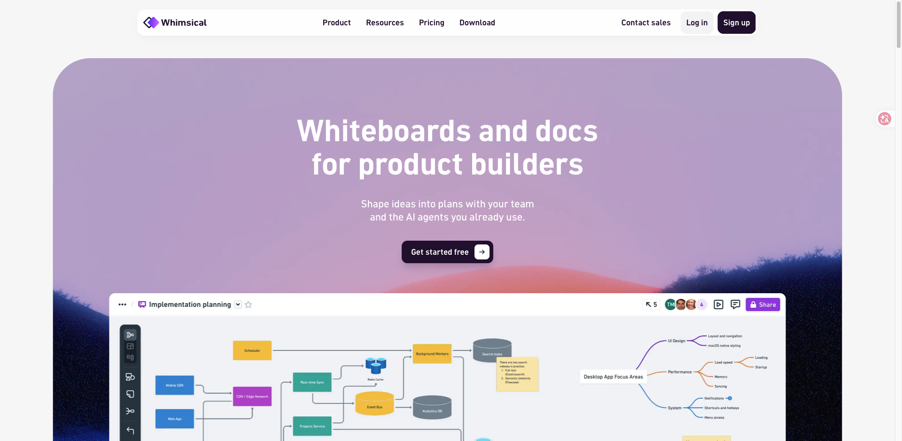

给产品团队用的白板和文档：画流程图、线框和思维导图，快且好看。
复刻一张「产品流程图」，大圆角 + 粉彩 + 贝塞尔曲线
Whimsical 的视觉语言：12px 大圆角、薄荷绿 / 淡紫 / 浅黄的粉彩填充、极细描边、完全没有阴影；节点文字短且居中；连线是平滑贝塞尔曲线，两端是小圆点而不是箭头。整体留白很大 —— 它的好看来自“什么都不加”。

面向产品团队的白板 + 文档工具。一个文件里可以放流程图、线框、思维导图、看板和文档，支持多人实时编辑、评论、模板库，也有 AI 辅助。
它的取舍很明确：不做无限精细的形状库，也不做高保真设计，只把产品工作里最常画的那几种图做得又快又统一。